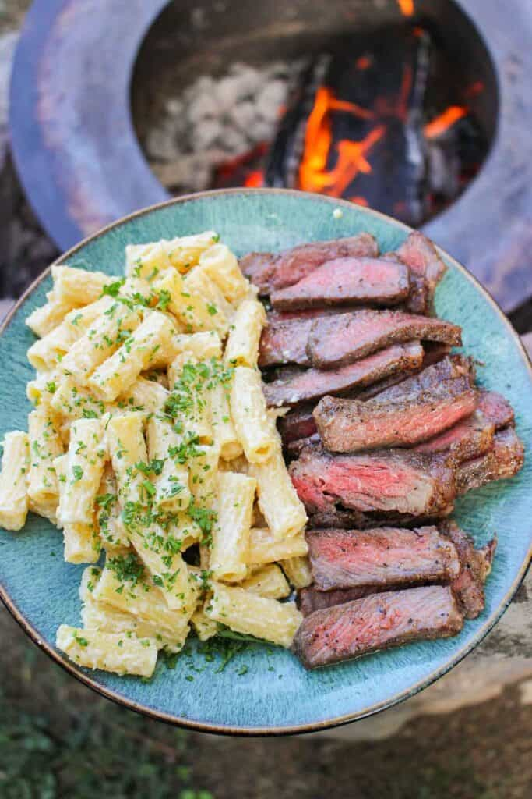

Steak and Cheesy Pasta

Description:
This Steak and Cheesy Pasta is made with juicy garlic herb steak and tender pasta smothered in a rich and creamy cheese sauce.
It’s decadent, flavorful, and ready in just over an hour!
Ingredients:
Steak:
- 3 NY Strip Steaks
- 1 tbsp Kosher Salt
- 1 tbsp Black Pepper
- 1 tbsp Garlic Powder
- 2-3 Garlic Cloves smashed
- 2-3 sprigs Rosemary
- 2-3 sprigs Thyme
- 4 tbsp Unsalted Butter
- Canola Oil
Pasta:
- 1 lb Cooked Pasta Rigatoni or Penne
- 1 cup Parmesan Cheese
- ⅓ cup Heavy Cream
- ¼ cup White Wine
- 2 tbsp Minced Garlic
- 2 tbsp Unsalted Butter
- Chopped Parsley for garnish
Steps:
- Begin by lathering your steaks with oil and generously seasoning with salt, pepper and garlic powder all over. Set to the side until ready to cook.
- Preheat a medium high heat fire for direct cooking (about 375F). Add a cast iron skillet about 2-3 minutes before cooking with some oil to preheat.
- Once the skillet is hot, add your steaks to sear for 1 minute per side to develop a crust. Next, pull the skillet over to a cooler side of the grill or rotate your grill grate. Add in the rosemary, thyme and crush garlic to simmer for 30 seconds. Finally add in butter and let it melt. Push your steaks to one side of the skillet and place the herbs and garlic on top. Begin basting the steak with the butter continually for 2 minutes then flip. Repeat this until your steaks have reached 120F internal. Be careful of your heat so the butter does not burn! Once the steaks are done, pull them off and the steaks with the herbs and drizzle all the butter over top. Let rest until ready to slice.
- Take your skillet and add back to the grill at medium heat (about 325F) for the pasta. Add your minced garlic and let brown for 1.5 minutes. Next, deglaze the skillet with white wine and let simmer for 1 minute. Finally, add your heavy cream, butter and parmesan cheese. Let simmer for another minute and finally add your cooked pasta. Mix together thoroughly and pull off when top.
- Slice into your steaks, serve with pasta and garnish with chopped parsley. Enjoy!